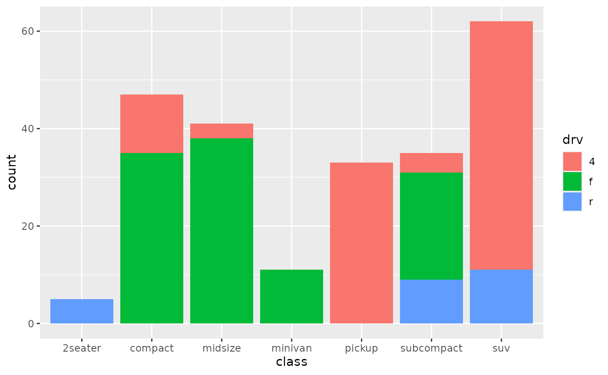

vignettes/C_barplots.Rmd
C_barplots.Rmd
suppressPackageStartupMessages({ library("plotlyutils") library("ggplot2") library("plotly") }) g <- ggplot(mpg, aes(class)) g <- g + geom_bar(aes(fill=drv)) print(g)

ggplotly(g)